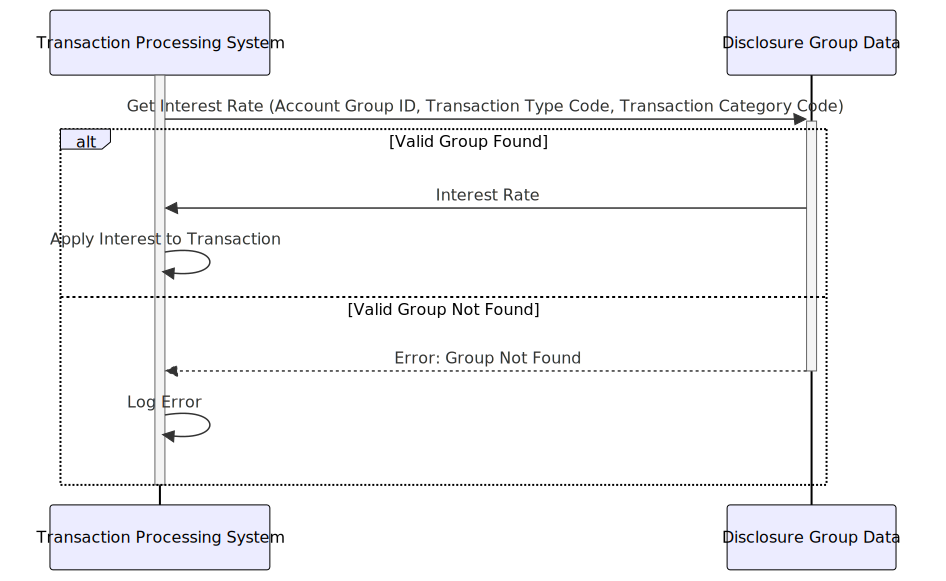

Gerado em: 1 de outubro de 2024
Descrição Resumida:
Este documento descreve a estrutura e função do Disclosure Group dentro do aplicativo CardDemo. Esta estrutura é crucial para determinar a taxa de juros aplicada a transações específicas de cartão de crédito com base em fatores como Account Type, Transaction Type e Transaction Category.
Histórias de Usuário: Como Administrador do Sistema de Cartão de Crédito, preciso definir diferentes taxas de juros para vários tipos e categorias de transações para que possamos aplicar encargos de juros apropriados às contas dos clientes.
Epic Relacionado: 3 - Gestão de Cartão de Crédito
Requisitos Técnicos:
Disclosure Group, incluindo:
Account Group ID: Um código que identifica o grupo da conta (por exemplo, Gold, Platinum).Transaction Type Code: Um código que representa o tipo de transação (por exemplo, Compra, Adiantamento em Dinheiro).Transaction Category Code: Um código para a categoria de transação (por exemplo, Mercearias, Viagens).Interest Rate: O valor percentual da taxa de juros aplicada a este grupo.Disclosure Group tenha uma combinação única de Account Group ID, Transaction Type Code e Transaction Category Code.Interest Rate deve estar dentro de um intervalo válido (por exemplo, 0,00% a 99,99%).Account Group ID, Transaction Type Code e Transaction Category Code.Disclosure Groups.Disclosure Groups existentes.Disclosure Groups desatualizados.Modelos Relacionados:
Disclosure Group: Representa uma combinação de conta, tipo de transação e categoria com uma taxa de juros específica.
DIS-ACCT-GROUP-ID String: Identificador exclusivo para o grupo da conta.DIS-TRAN-TYPE-CD String: Identificador exclusivo para o tipo de transação.DIS-TRAN-CAT-CD String: Identificador exclusivo para a categoria de transação.DIS-INT-RATE Decimal: Taxa de juros aplicada às transações pertencentes a este grupo.Configurações:
Maximum Interest Rate: 99.99Melhorias de Código:
Disclosure Groups.Melhorias de Segurança:
Disclosure Group.Disclosure Groups, incluindo quem fez a alteração, o que foi alterado e quando foi alterado.Diagrama Conceitual:
–Made by “Smart Engineering” (by Compass.UOL)–